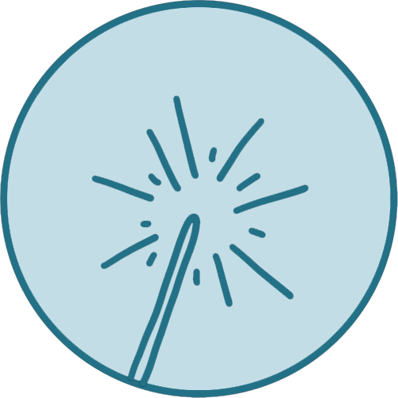

首页
初见
新年
星夜
生活
争执
决定
Yes, it's our wedding!
请用手机竖屏浏览哦

新年
一晃，到了新年前夜️
本来约好四个人去世贸天阶跨年的……
算了，我们自己去！
校门口打不到车
于是坐地铁坐到西直门
既没有出租车、公交也通通停运
00:00
新年快乐！
新年快乐！
世贸天阶去不了了，还有什么事情可以做呢……
看升旗？要不我们走到天安门，我带你逛一逛
嗯
00:15
01:05
01:40
三四个小时
走七八公里还是绰绰有余的
还有三个多小时
也太冷了
“跟我来”
为了取暖，跑到二号线地铁坐一圈，
这种主意也就王治钧想的出来吧？
不记得那天的升旗仪式有什么特别
谢谢你
陪我度过一个特别的新年夜
→
下一章 星夜